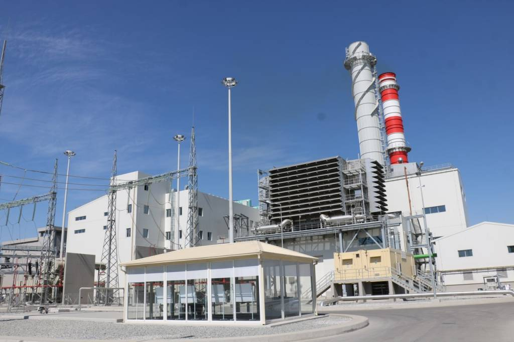

Energiya va qayta tiklanadigan energiya

O`zbekistonning energiya tizimi Markaziy Osiyodagi eng yirigi
hisoblanadi. Elektr stantsiyalarining umumiy o`rnatilgan quvvati
taxminan 14 140,6 MVtni tashkil qiladi. Elektr energiyasini ishlab
chiqarishning 85 foizga yaqini asosan tabiiy gazda, qolgan qismi esa
GESlarda ishlaydi. O`zbekiston 2019 yilda elektr energiyasini ishlab
chiqarishni 2018 yilning shu davriga nisbatan 1,4 foizga oshirdi.
O`zbekistonda yalpi ichki mahsulotning o`sish sur’atlari (yiliga
8-8,5%) o`sishi bilan bog`liq energiya iste’molining oshishi
kuzatilmoqda.
Iqtisodiy rivojlanishning hozirgi bosqichida elektroenergetikaning
asosiy maqsadi: iste’molchilarning elektr energiyasiga o`sib
borayotgan ehtiyojlarini qondirish, mavjud elektr stantsiyalari va
tarmoqlarini modernizatsiya qilish va rekonstruksiya qilish, yuqori
samarali energiya ishlab chiqarish texnologiyalariga asoslangan
yangi ishlab chiqarish quvvatlarini qurish, elektr energiyasini
hisobga olish tizimini takomillashtirish, yoqilg`i energetika
resurslarini rivojlantirish bilan qayta tiklanadigan energiya
manbalaridan foydalanish.
Elektroenergetikani 2021 yilgacha rivojlantirish elektr
energiyasining barcha sohalariga taalluqli 62 ta investitsiya
loyihalarini amalga oshirishni ko`zda tutadi, bu quyidagilarni
ta’minlaydi:
energiya ishlab chiqarish texnologiyalarini yanada
takomillashtirish, tabiiy gazdan foydalanish samaradorligini
oshirish, sanoat mahsulotlarining energiya sarfini kamaytirish
bo`yicha chora-tadbirlarni amalga oshirish;
respublikaning tabiiy suv oqimlari gidroenergetika resurslarining
jadal rivojlanish tendensiyasini saqlab qolish;
noan’anaviy qayta tiklanadigan energiya manbalaridan foydalangan
holda yoqilg’i-energetika balansini yanada diversifikatsiya qilish
(shamol va quyosh elektr stantsiyalarini yaratish);
iqtisodiyot tarmoqlari, aholi va eksport ta’minotining o`sib
borayotgan ehtiyojlarini qondirgan holda, energiya tizimining
barqarorligini oshirish uchun magistral elektr tarmoqlarining maqbul
konfiguratsiyasini shakllantirish;
yagona elektr energiyasi tizimi faoliyatining barqarorligini,
iste’molchilarni elektr energiyasi bilan ta’minlashning
ishonchliligini oshirish, mamlakatning energiya xavfsizligini
mustahkamlash.
Bugungi kunga qadar Zarafshon vodiysida yuqori kuchlanishli
liniyalarda elektr energiyasi to`liq yo`q qilinadi yoki elektr
energiyasining yo`qotilishi kamayadi, transformator va elektr
inshootlaridagi yo`qotishlar kamayadi, maqbul rejimlar aniqlanadi va
energiya tejaydigan moslama yaratish bo`yicha ilmiy-tadqiqot ishlari
olib borilmoqda.
Atom energetikasi. Atom elektr stansiyalarini qurish juda muhimdir.
Stansiya eng arzon elektr energiyasini ishlab chiqaradi va bu uzoq
vaqt kafolatlanadi. Mutaxassislarning fikriga ko`ra, 2030 yilga
kelib, O`zbekistonda elektr energiyasiga talab ikki baravar ortadi –
117 milliard kVt / soatgacha.Yangi energiya manbalarini joriy
qilmasdan turib, hozirgi vaqtda tanqisligi 48 milliard kVt / soatni
tashkil etadi. O`z navbatida, mamlakatning har yili elektr
energiyasiga bo`lgan talabi 69 milliard kVt soatni tashkil etadi.
“Rosatom” davlat korporatsiyasining birinchi ikkita energiya
blokining qurilishi mamlakatning energiya balansiga 2,4 ming MVt
(yiliga 21 milliard kVt / s) elektr energiyasini qo`shish imkonini
beradi. Turli ma’lumotlarga ko`ra, 2030 yilda stansiya elektr
energiyasining 14 foizidan 18 foizigacha ishlab chiqaradi.
Quyosh energiyasi. O`zbekiston qayta tiklanadigan energiya uchun
ulkan imkoniyatlarga ega. O`zbekistonda quyosh energiyasining eng
yuqori salohiyati.
O`zbekistonning iqlim va geografik sharoiti sanoat miqyosida elektr
va issiqlik energiyasini ishlab chiqarish uchun quyosh energiyasidan
faol foydalanish imkonini beradi. Quyosh energiyasi – bu qayta
tiklanadigan energiya manbai, qulay va foydalanish oson, amaliy
qo`llash nuqtai nazaridan va’da qiladi. O`zbekistonning yalpi quyosh
potentsiali qariyb 51 milliard dona, texnik potentsiali 177 million
barmoq deb baholanmoqda, bu mamlakatda joriy qazib olinadigan
yoqilg`i ishlab chiqarishning uch baravaridan ko`pdir.
O`zbekistonda kuchli quyosh nurlari mavjud va eng ilg`or fotovoltaik
texnologiyalarning asosi bo`lgan elektr stantsiyasi O`zbekiston
hukumatiga energetika sohasida qayta tiklanadigan energiyadan
foydalanishni kengaytirishga imkon beradi. 2031 yilga kelib, hukumat
barcha energiya ehtiyojlarining 20 foizidan ko`pini qayta
tiklanadigan energiya manbalari, shu jumladan quyosh energiyasidan
ishlab chiqarishni rejalashtirmoqda.
Qizilqum viloyati O`zbekistonning quyosh mintaqalari hisoblanadi.
Agar bizning mintaqamizda kunlar uzoq davom etishini hisobga olsak,
siz yoz kunlarida quyosh energiyasidan 15-16 soat foydalanishingiz
mumkin. Ba’zi bir aholi va cho`ponlarning uylari elektr tarmog`ining
markazlaridan ancha uzoqroq joylashganligini hisobga olsak, bu
joylarni energiya bilan ta’minlash quyosh batareyalaridan tejamli
foydalanish deb hisoblanadi. Mintaqada quyoshli kunlar yiliga 3000
soatdan ko`proq. Shu vaqt ichida 1 mkv sirtga 1200-2000 kVt energiya
tushadi.
Qizilqum mintaqasida 1 mkv ga sirt soatiga 1600-2000 kVt ga tushadi,
bu energiya. Bu shuni anglatadiki, mintaqada quyosh energiyasi
elektr va issiqlik energiyasini olish uchun katta imkoniyat
yaratadi. O`zbekistonda davlat dasturi asosida quyosh energiyasini
rivojlantirish ishlari olib borilmoqda, shu sababli Karmana tumanida
100 MVt quvvatga ega quyosh fotoelektr stansiyasini qurish
rejalashtirilmoqda. Bundan tashqari, Zarafshon shahrida 1 MVt
quvvatga ega fotoelektr stansiyasini qurish rejalashtirilmoqda.
Shamol energiyasi. O`zbekiston Respublikasida yirik muvaffaqiyatli
shamol energiyasini rivojlantirish uchun yaroqli shamol resurslari
mavjud. Kompaniya tomonidan ishlab chiqilgan Atlas asosida,
“O`zbekenergo” viloyatida va Qoraqalpog`istonning janubida ikkita
istiqbolli uchastkani aniqladi. Har bir uchastkada shamolning
tezligi va yo’nalishini, shuningdek havoning zichligi va haroratini
aniqlash uchun asboblar o’rnatilgan 85 metr balandlikdagi
meteorologik ustunlar o’rnatildi. Sun’iy yo`ldosh tizimi orqali
ushbu qurilmalar ma’lumotlarni tahlil qilish uchun onlayn tarzda
serverga ma’lumotlarni uzatadilar. Ushbu tahlil shamol
generatorlarining eng maqbul quvvatini aniqlash va investitsiya
loyihasini tayyorlashda elektr energiyasini ishlab chiqarishni
hisoblash uchun ishlatiladi.
Biomassadan foydalanish. O`zbekistonda qishloq xo`jaligida, uylarda
va oilaviy fermalarda biomassadan foydalanish ko’p yillar davomida
amalda bo’lgan. Mamlakatda go`ng aerob hazm qilish (kompostlash),
anaerob hazm qilish (biologik parchalanish) kabi ko’plab an’anaviy
amaliyotlarda va organik o`g`it sifatida to`g`ridan-to`g`ri
qo`llashda ishlatiladi. Biomass, shuningdek, biogaz ishlab chiqarish
uchun an’anaviy energiya manbai bo’lib kelgan. O`zbekiston taxminan
3500 MVt / soat biomassa salohiyatiga ega.
Geotermal manbalar respublikaning deyarli barcha mintaqalarida
mavjud. Yillar davomida olib borilgan izlanishlar natijasida
O`zbekistonda 8 ta gidrotermal resurslar mavjud. Geotermal
suvlarning yalpi salohiyati 244,2 ming tonna ekvivalent ekvivalenti
sifatida baholanmoqda, texnik potentsial aniqlanmagan. Respublikada
geotermal suvlarning o’rtacha harorati 45,5ºS. Er osti suvlarining
eng katta issiqlik potentsiali Buxoro (56,0 ºS) va Sirdaryo (50,0
ºS) viloyatlarida qayd etilgan. Yer osti issiqligi boshqa bir qator
sohalarda foydalanish uchun mavjud. Kelgusida bu issiqlikni deyarli
hamma joyda ishlatish mumkin, chunki O`zbekistonda 4000-6000 metr
chuqurlikda jinslarning harorati 70 dan 300 darajagacha. Geotermal
suv omborlari bo`yicha yaxshi tadqiqotlar olib borilganiga qaramay,
termal suvdan foydalanish hali ham o`zining yoshligidadir. Termal
buloqlarni rivojlantirish milliy energiya dasturida ko`zda tutilgan.
Imkoniyatlar. “Navoiy erkin industrial-iqtisodiy zonasi” xorijiy
investorlarni jalb qilish va quyosh va shamol elektr stantsiyalari
uchun qo’shimcha qismlarni yaratishga imkon beradi.
Quyosh va biogaz energiyasidan foydalanish bo’yicha loyihalar Osiyo
taraqqiyot banki va boshqa xalqaro moliyaviy institutlarning
mablag’lari bilan qo’llab-quvvatlanadi.
Yetakchi mutaxassislarning fikriga ko`ra, geografik joylashuvi va
iqlim sharoiti bo`yicha O`zbekiston ushbu loyihani amalga oshirish
uchun juda qulay imkoniyatlarga ega. Yiliga quyoshli kunlar soni
bo’yicha va bu 320 kundan ortiq bo`lsa, mamlakatimiz dunyoning
ko`plab mintaqalaridan ustundir.
Osiyo va Jahon banklarining hisob-kitoblariga ko`ra, O`zbekistonda
quyosh energiyasining yalpi salohiyati 51 milliard tonna neft
ekvivalentidan oshadi. Ushbu manbalar tufayli, mutaxassislarning
fikriga ko`ra, joriy yilda mamlakatimizda iste’mol qilinadigan
elektr energiyasidan 40 baravar yuqori elektr energiyasi ishlab
chiqarish mumkin.
Ta’kidlash joizki, mamlakatning turli mintaqalarida quyosh
energiyasini qayta ishlash bo`yicha o`nlab stantsiyalar ishlamoqda,
ularning yordami bilan alohida ob’ektlarni elektr va issiqlik bilan
barqaror ta’minlash ta’minlanmoqda. Kremniyli fotovoltaik
batareyalar ishlab chiqarish yo`lga qo`yildi, ularning texnologiyasi
mintaqalarimizning tabiiy sharoitlarini hisobga oladi. Ushbu
texnologiya tajriba to`plamlari muvaffaqiyatli sinovdan o`tgan mobil
telefonlar, noutbuklar, planshetlarni zaryad oladigan ixcham kam
quvvatli quyosh fotoelektrik qurilmalari uchun ishlab chiqilmoqda.
Issiq suv va issiqlik ta’minoti, elektr energiyasini ishlab
chiqarish uchun fotovoltaik va termodinamik transformatsiyalar,
elektr energiyasini ishlab chiqarish uchun quyosh energiyasidan
foydalanish, materiallar va konstruksiyalarni issiqlik bilan ishlov
berish uchun past potensialli stansiyalarni yaratish bo`yicha eng
faol va samarali ilmiy-tadqiqot ishlari olib borilmoqda.
Konferensiya tashkilotchilari
-

Oliy ta’lim, fan va innovatsiyalar
vazirligi -

Tog‘-kon sanoati va geologiya
vazirligi